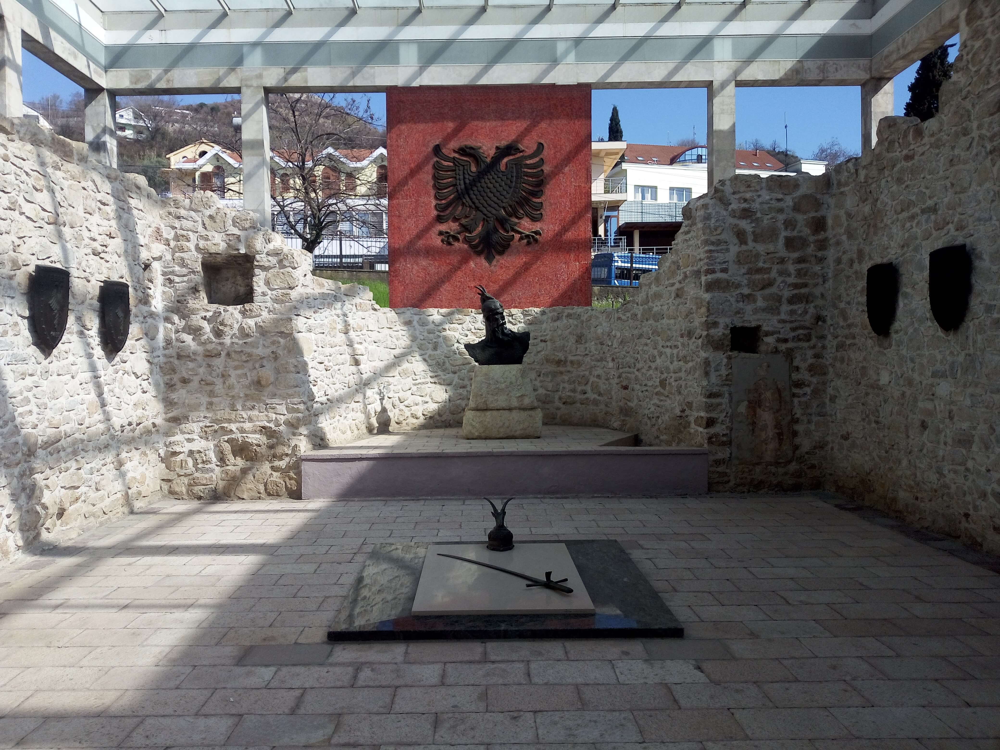

Skanderbeg Memorial
ALBANIA · LEZHË
A Historic Landmark in Albania
Skanderbeg Memorial in Lezhë, Albania, commemorates Gjergj Kastrioti Skanderbeg, the national hero of Albania. The memorial stands at the site associated with the former Cathedral of Saint Nicholas, where Skanderbeg was buried in 1468. Today, the site is an important historical landmark for visitors interested in Albania's history, heritage, and national identity. Lezhë also holds a special place in Albanian history as the location of the Assembly of Lezhë in 1444, where Skanderbeg brought together several Albanian noble families to form an alliance against the Ottoman Empire. This historic gathering became an important moment in the country's past and strengthened Skanderbeg's role as a symbol of unity and resistance. The memorial preserves the memory of his legacy and offers visitors an opportunity to learn more about one of the most significant figures in Albanian history.
My Photo Gallery
Explore my personal travel photos of the Skanderbeg Memorial.
View All Photos ↗